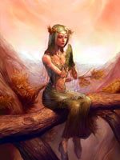

Фрейя або Фреа ("пані"), у скандинавській міфології богиня родючості, любові і краси, дочка Ньерда і сестра Фрейра. Найбільшою коштовністю Фрей було намисто Брісінгамен, куплене нею за чотири ночі любові з виготовив його карликами. Краса блакитноокою богині підкорила безліч шанувальників, включаючи Оттара, нащадка Сигурда, перетвореного нею в вепра, щоб завжди тримати у себе в Асгарді.
Фрейя - постійний об'єкт жадання Йотун трюмо і Хрунгніра, будівельників Асгарда. Як і всі вани, вона розбиралася в магії і навіть могла літати. Наприклад, пролітаючи над землею, богиня розбризкує ранкову росу і літній сонячне світло, з її золотистих кучерів сипалися весняні квіти, а сльози, падаючи на землю або в море, перетворювалися в бурштин.
Розшукуючи свого зниклого чоловіка Одра (можливо, іпостась Одіна), Фрейя в супроводі зграйки парфумів любові облетіла все небеса; проте вона часто пересувалася і на колісниці, запряженій ласкавими кішками; так вона приїхала на похорон Бальдра.
У Фрейі, згідно з деякими міфам, є дві дочки - Хнос ("дорогоцінний камінь") і герсу ("скарб"), а окремі джерела стверджують, що саме вона навчила богів Асгарда чарам і заклинань ванів.
Разом з тим вважалося, ніби Фрейя щодня ділить з Одіном полеглих воїнів, немов Валькірія, що суперечить її характеристиці як богині з ванів і що свідчить про змішування Фрей з Фрігге. Мала планета Фрейя (латинська назва Freia) була відкрита Генрі д'Аррест 21 жовтня 1862 року. Назва була дана першовідкривачем на честь скандинавської богині любові і родючості Фрей.